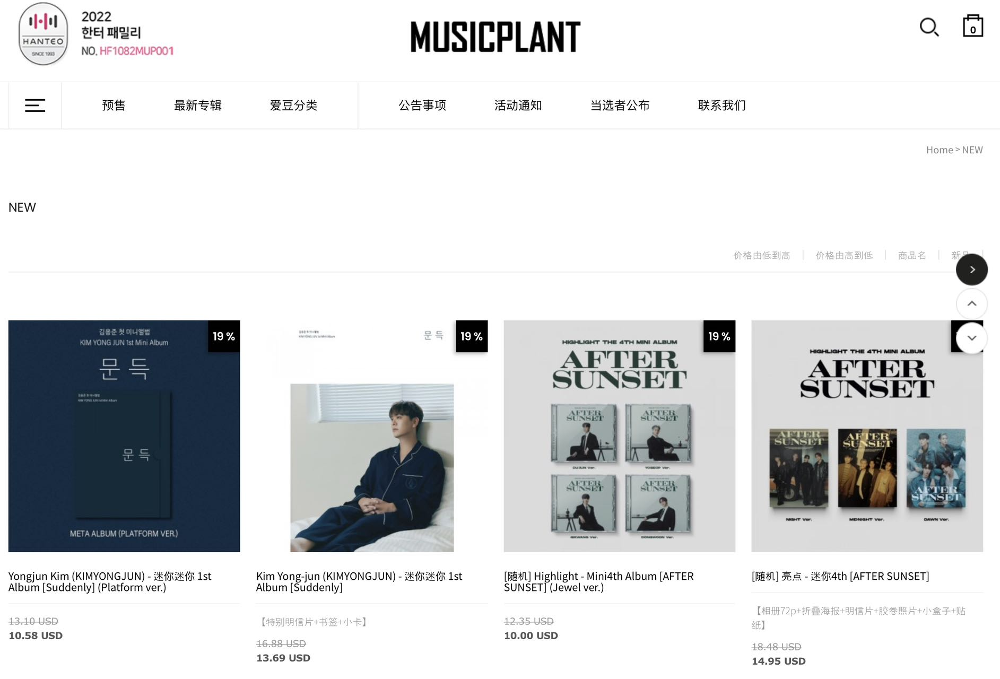

Assignment 3
One-stop album information service for K-pop fans！
Hi！ This is the third assignment of COMM5961.
As a loyal K-pop fan, I am an enthusiastic album collector myself. Every time my favorite idol releases a new album, I place orders on several different platforms to get various special pre-sale gifts. It takes a lot of time to collect album information, which makes me feel exhausted. At the same time, fandom friends around me showed the same exhaustion, some of them gave up because they didn't understand the complicated channels to buy albums, and some of them missed out on their favorite pre-sale gifts because the information was too scattered.

I found that even though the total number of K-pop albums purchased by Chinese fans in 2021 exceeded one million, and the Chinese market has a large number of K-pop fans and demand for album purchases, there is no comprehensive information platform for fans to check information and communicate with each other. It might be a good business opportunity if we can provide a platform for fan groups to gather album purchase channels, price comparison, pre-sale gift information, logistics tracking and comment exchange. With the information services and discount incentives provided through the membership system, combined with advertising revenue, this website would have the opportunity to grow and operate in the long run.
To delve deeper into this market issue, I invited five K-pop fans with different levels of interests to conduct interviews, and they brought me unexpected ideas and diverse thoughts. More in-depth research and findings will be presented in the assignment file, if you'd like to see how I selected my target groups and specific personalities, please click the button below to visit my journal page.